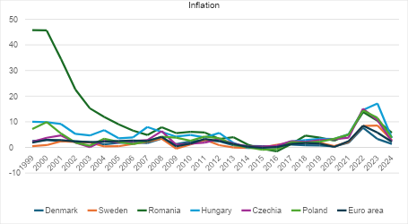
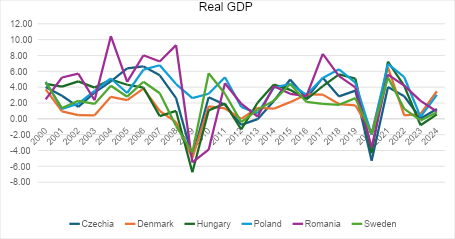

Europe stands as the birthplace of enlightenment and civilization, shaped by pivotal eras like the Renaissance and the Industrial Revolution. Yet Europe's history is equally marked by devastating conflicts; the world wars left most European cities in ruins, their economies, institutions, and populations ravaged. The European Union, established in 1991 following the collapse of the Berlin Wall, emerged as a beacon of peace and cooperation. Membership requires nations to meet the Copenhagen Criteria—democracy and the rule of law—while Euro Area entry demands the Maastricht Criteria, including price stability and a budget deficit around 3 percent. Most recently, Croatia joined the Euro Area in 2023 and Bulgaria in 2026.
If the Euro fails, Europe fails. — Angela Merkel
The case for a common currency
The Euro, as a common currency, has delivered on several fronts: it fosters economic integration, enables low inflation, stabilizes exchange rates, reduces trade costs, and serves as a reserve currency for the Euro Area. These advantages are tangible and significant.
Yet from its inception, the Euro has revealed a fundamental vulnerability: member states react to economic shocks in fundamentally different ways. Beyond external shocks like the 2008 global financial crisis, the system faces endogenous threats—the 2010–2012 European Debt Crisis demonstrated how troubles in one member, such as Greece or Portugal, ripple across the union. These crises prompt a critical question: Is the Euro truly suitable for all EU members, and does it adequately control inflation?
To answer this, we must examine monetary policy through the lens of inflation and real GDP growth, comparing Euro Area members with non-Euro EU nations: Sweden, Denmark, Hungary, Romania, Czechia, and Poland.

Flexibility versus integration
The inflation data reveals a striking pattern: both groups moved in tandem over the past two decades. Notably, non-Euro countries kept inflation below 10 percent during the 2010–2012 debt crisis that devastated Euro members like Greece and Portugal. This suggests that currency flexibility provides a buffer against crises.
The economic trade-off at play mirrors what economist Dani Rodrik calls the Trilemma: countries must choose between national sovereignty, democratic governance, and hyperglobalized economic integration. Few can sustain all three simultaneously. Non-Euro EU members, by retaining their own currencies, prioritize sovereignty and democratic autonomy—at the cost of deeper European integration.
Sweden exemplifies this choice. In 2003, Swedish voters rejected Euro adoption to preserve the krona's flexibility and national sovereignty. Similarly, Denmark refused the Maastricht Criteria in 2000 to protect the Danish krone, though the EU granted Denmark an opt-out with a stabilization arrangement. Poland, meanwhile, has wielded its zloty strategically. When the 2009 global financial crisis struck, Poland was the only EU member to avoid recession, with currency flexibility enabling export growth and financial stability that fueled innovation and development—Poland has since moved from lower-middle to upper-middle income status.

Culture, identity, and currency choice
Economic analysis alone does not explain currency decisions. Czechia's reluctance to adopt the Euro reflects both economic and cultural concerns. The Czech koruna symbolizes economic stability and national independence—a sentiment so deep that switching to the Euro would transcend mere economics. Economists argue that independent monetary policy functions as insurance against crises, allowing central banks to respond to local conditions.
Historian Illhan Ortaylı offers a provocative perspective on European integration. He argues that the EU project, while seamless on paper, fails to account for Europe's profound social and cultural diversity. The Protestant ethic and discipline of Northern Europe cannot coexist harmoniously in the same monetary framework as the Mediterranean economies, which are more flexible and informal. Forcing fiscal discipline across such diverse societies is, in Ortaylı's metaphor, akin to strapping a suit of armor onto a weakened body—the burden is unsustainable. As Germany's economic hegemony strengthens, smaller and less-developed members lose room to maneuver.
The verdict: context matters
The Euro undeniably delivers economic integration, price stability, low exchange-rate risk, and reduced trade friction for its members. However, during crises, non-Euro countries gain critical flexibility—Poland's resilience in 2009 demonstrates the value of independent monetary policy. Beyond economics, non-Euro members cherish national sovereignty and democratic self-determination against what they perceive as the homogenizing pressure of currency union.
There is no universal answer. The common currency preference of EU members depends on their political, economic, and cultural attitudes. For some, the Euro is an unbridled advantage; for others, the cost to sovereignty is too steep. Both positions have merit, grounded in each nation's unique circumstances and values.
Selected references
- Baun, M., & Marek, D. (2010). The Czech Republic and the Euro: Public opinion and the political economy of Euro adoption. Journal of Contemporary European Studies, 18(2), 179–194.
- Drozdowicz-Bieć, M. (2011). Reasons why Poland avoided the 2007–2009 recession. Prace i Materiały Instytutu Rozwoju Gospodarczego (SGH), 86(2), 39–66.
- Horvath, R. (2007). Ready for EMU? Evidence for the Czech Republic.
- Ortaylı, I. (2026). Europe and us [Avrupa ve Biz]. Kronik Kitap.
- Rodrik, D. (2011). The globalization paradox: Democracy and the future of the world economy. W. W. Norton & Company.
- Vermeiren, M. (2013). The political economy of the Eurozone crisis: A Rodrikian perspective. Journal of Common Market Studies, 51(6), 1194–1210.